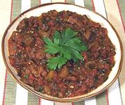

|
Eggplant with Tomatoes & CapersItaly - Melanzane Trifolate "a Fungitelli" | ||||
| Serves: Effort: Sched: DoAhead: |
4 side ** 1-1/2 hr Yes |
A very flavorful vegetable side that goes well with pasta and particularly with meat dishes. To use it as a combined vegetable / sauce for pasta cut the cubes a little smaller, 1 inch or so. | |||
|
|
2 15 1 1 1 1/4 tt |
# oz T cl T c |
Eggplant can Diced Tomatoes Capers Garlic Parsley Olive Oil Salt |
Prep - (1 hr - 20 min work)
|